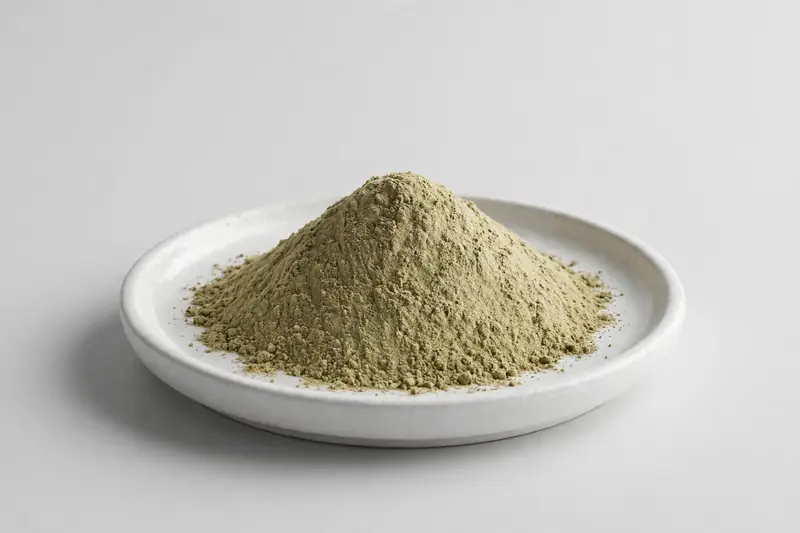

Hemp Seed — food-grade Cannabis sativa seed material positioned around protein and omega-3 content for functional food formulations.

Overview
Hemp seed extract is produced from Cannabis sativa seed, a non-controlled food-grade material supplied for its protein and omega-3 content. Buyers request it for protein blends, functional foods and nutrition powder concepts; it is distinct from CBD ingredients and no such claims apply. Because seed-derived material is food-grade, specifications tend to focus on protein content and fatty acid profile. As a Xi'an-based trading company, we source through vetted partner producers and confirm feasibility per buyer specification.
Specifications below reflect commonly requested options in the market — not a stock list. Share your target spec and we'll confirm exactly what we can supply, honestly.
| Specification | Details |
|---|---|
| Botanical identity | Hemp seed protein powder or extract (Cannabis sativa seed) |
| Marker compound | Commonly requested spec ranges: protein content and omega-3 content; assay scope agreed per buyer specification |
| Appearance | Greenish-tan fine powder |
| Mesh size | Typically 80–100 mesh (confirm per inquiry) |
| Testing | COA/TDS arranged on request; scope agreed per your spec |
Applications
Documentation
We don't claim in-house labs or certifications we don't hold. COA and TDS documents can be arranged on request, and testing scope is agreed against your specification before supply.
FAQ
Related products
Papain (Carica papaya)
Key marker: USP activity units
View specs →Rutin (Sophora japonica)
Key marker: 95%+ HPLC
View specs →Hesperidin (Citrus spp.)
Key marker: Hesperidin 90-98%
View specs →Linum usitatissimum
Key marker: Lignan (SDG) & Omega-3
View specs →Rheum rhaponticum
Key marker: Rhaponticin
View specs →Send your target spec and volumes — we'll respond with a tailored quotation.
Request a Quote